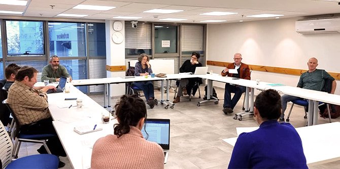

תחום מדעי הרוח הוא נדבך חשוב בכל יחידות קרן מנדל-ישראל, וגם בתוכניות מרכז מנדל למנהיגות בצפון. הלימודים בתוכניות הצפון כוללים פילוסופיה, היסטוריה, לימודי דת כרוח, ספרות וכתיבה יוצרת, ועוד. זאת מתוך אמונה שהתחומים הללו טומנים בחובם תרומה משמעותית והם מהווים את הבסיס לכישורים וליכולות של מנהיגות – הרחבת אופקים, בירור ערכי, פיתוח כישורי חשיבה ביקורתית ויכולת "להרים" את המבט מעבר לגבולות המוכר והידוע לעבר אופקים וחלומות חדשים.
בשנת פעילות זו יצא לדרך פורום מדעי הרוח, שתפקידו לדייק את תוכני לימודי הרוח ולהתאימם הן לתאוריית השינוי של מרכז מנדל למנהיגות בצפון בכלל והן לתפיסתה הייחודית של כל אחת מהתוכניות. הפורום יעסוק גם בקשר, הנבחן בקרן כולה, בין התכנים הפדגוגיים לבין האימפקט בשדה ההשפעה.
המפגש הראשון של הפורום התקיים ב-18 בנובמבר. מנהל המרכז, מיקי נבו, פתח את המפגש והציג את תפקידו ואת תכליתו של הפורום. עו"ד עלי חיידר, מוביל הפורום, הציג מעולם הרוח האישי שלו והוביל קריאה מודרכת בסורה 103 (אל-עצר) מהקוראן. ד"ר יואב קני, המלווה האקדמי של תוכנית מנדל למנהיגות חברתית בצפון, הציג את הרציונל להוראת מדעי הרוח בתוכנית ואת האתגרים הכרוכים בה. אחר כך פנה הפורום לדיון פתוח בהובלתו של פרופ' אמל ג'מאל בסוגיות השונות שעלו.
את הפורום מוביל, כאמור, חבר הסגל עו"ד עלי חיידר, וחברים בו אנשי סגל ומרצים הפועלים במרכז מנדל בצפון, מכירים את כיווני התפתחותו ומביאים עמדות מגוונות:
פרופ' מוטי גולני (היסטוריה),
פרופ' אמל ג'מאל (פילוסופיה),
פרופ' אמיר גולדשטיין (היסטוריה),
ד"ר עמרי קסטלנובו (פסיכולוגיה ומנהיגות),
ד"ר הרב אברהם ליפשיץ (הגות);
ד"ר שמעון אזולאי (פילוסופיה ופדגוגיה),
גב' מירית חייבי-ברק (חינוך, אקטיביזם וערכים), גב' אפרת ניסימוב (חברה מגוונת), ד"ר יואב קני (פילוסופיה),
ד"ר ליאור אלפרוביץ' (היסטוריה),
פרופ' רות מרגלית (הוראה, חינוך ובריאות הציבור),
גב' נגה גיל-בשיא (פיתוח ואסטרטגיה), ונדב רובינשטיין (חבר צוות המרכז).
{kind=link}